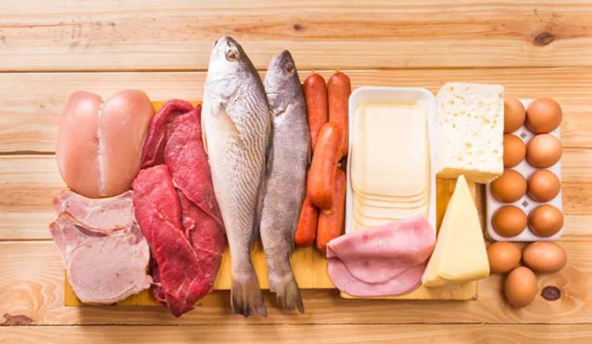
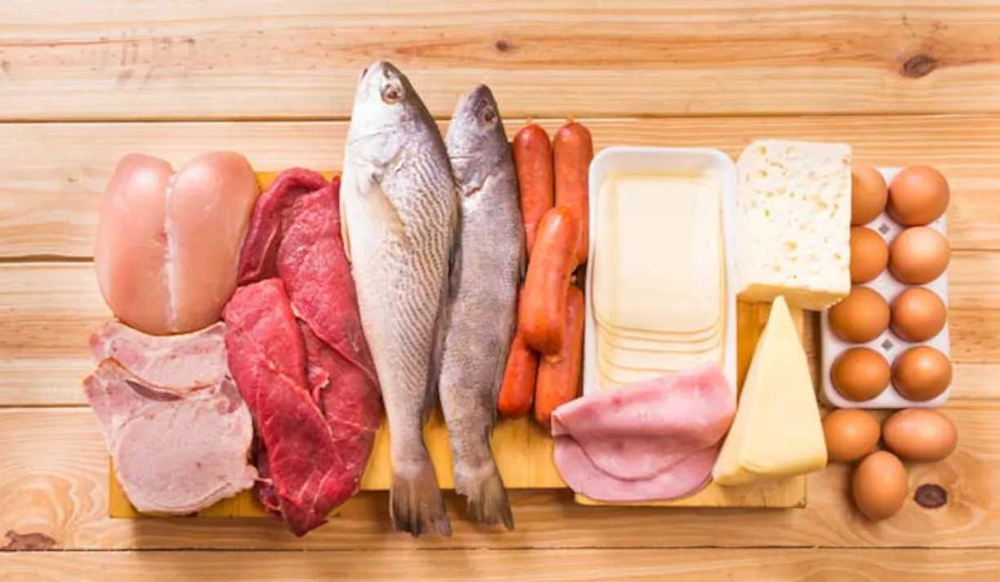
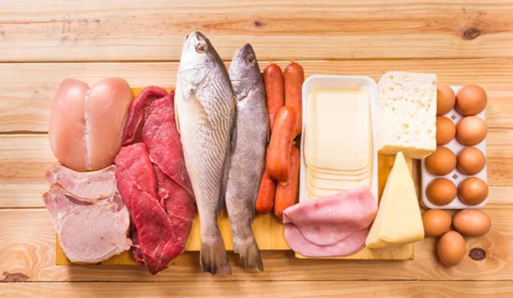

Proteins are large, complex molecules that play many critical roles in the body.
They do most of the work in cells and are required for the structure, function, and regulation of the body's tissues and organs.
Proteins are made up of hundreds or thousands of smaller units called amino acids, which are attached to one another in long chains.
There are 20 different types of amino acids that can be combined to make a protein.
The sequence of amino acids determines each protein's unique 3-dimensional structure and its specific function.
Amino acids are coded by combinations of three DNA building blocks (nucleotides), determined by the sequence of genes.
Major Sources of Proteins are :
Animal-based foods : meat, poultry, fish, eggs, and dairy foods tend to be good sources of complete protein
while plant-based foods (fruits, vegetables, grains, nuts, and seeds) often lack one or more essential amino acid.
Dairy Products : Milk, yoghurt (especially Greek yoghurt), cheese (especially cottage cheese).
Nuts and Seeds : almonds, pine nuts, walnuts, macadamias, hazelnuts, cashews, pumpkin seeds, sesame seeds, sunflower seeds.
